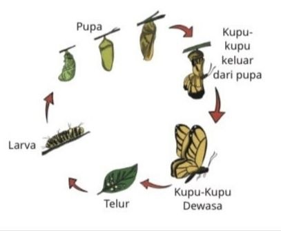
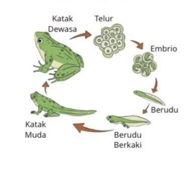
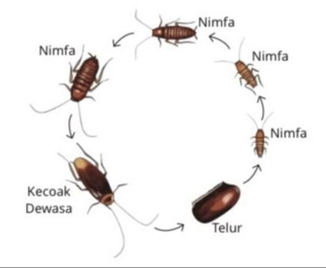
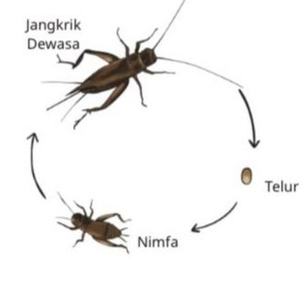
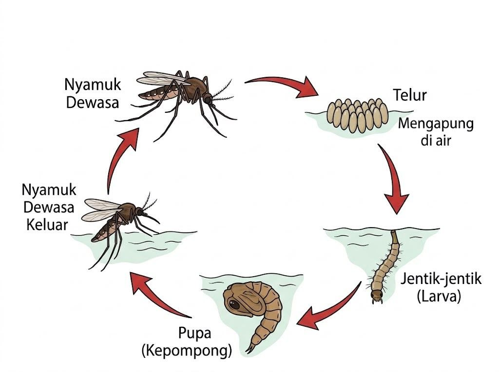
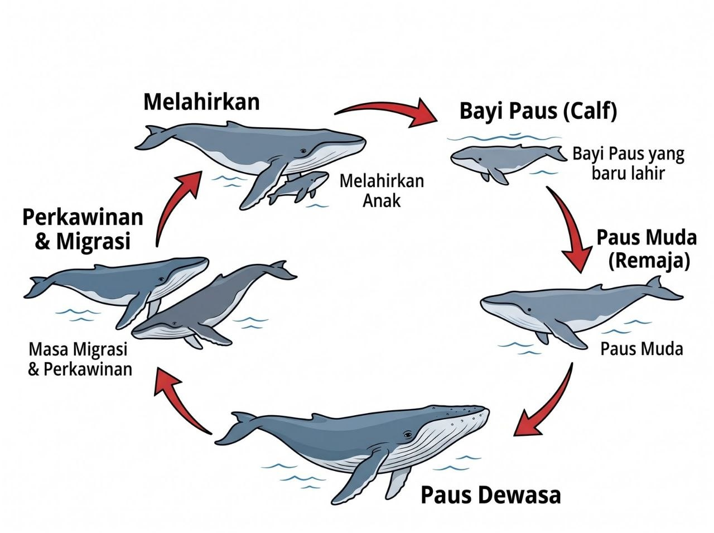

1
Kupu-kupu
Metamorfosis Sempurna
Tahapan: Telur → Ulat (Larva) → Kepompong (Pupa) → Kupu-kupu Dewasa
Siklus hidup (daur hidup) adalah seluruh rangkaian tahapan perubahan dan pertumbuhan yang dialami oleh makhluk hidup sepanjang hidupnya, mulai dari awal keberadaannya (seperti telur atau kelahiran), tumbuh menjadi dewasa, hingga mampu berkembang biak menghasilkan keturunan kembali.
Berikut adalah bagan tahapan daur hidup hewan metamorfosis sempurna dan tidak sempurna:






Beberapa contoh lain dari Siklus Hidup Hewan, yang dikelompokkan menjadi Metamorfosis sempurna dan Tidak Sempurna